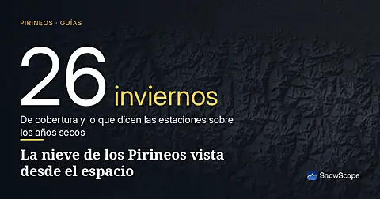
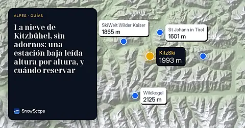
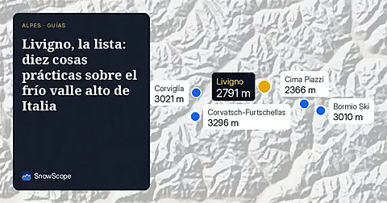
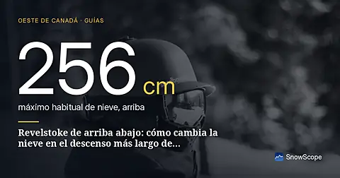
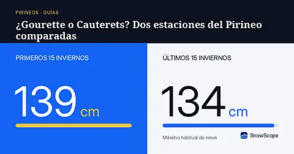
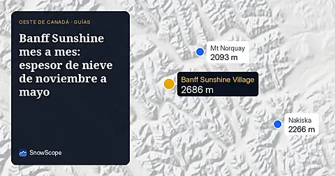
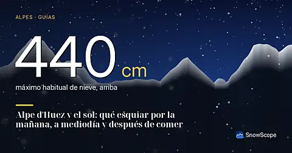
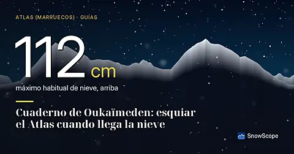

Partes de nieve · Inviernos pasados
Partes de nieve diarios para esquiadores: dónde está la nieve, qué llega y dónde esquiar, a partir del mapa de nieve de SnowScope y de las estaciones de medida. Cada cifra sale de los datos del día.


Hemos comparado la nieve del 10 de noviembre con la mayor altura de nieve de cada invierno en 46 estaciones de esquí durante 46 inviernos. Un comienzo nevado ayuda, pero menos de lo que creen muchos esquiadores.

Tres inviernos flojos seguidos terminaron en 2025-26; este otoño ha empezado con normalidad.

En 24 de 46 inviernos, las estaciones de la vertiente italiana y del sur de los Alpes franceses tuvieron un invierno relativamente mejor que la vertiente norte. El gráfico, los grandes años y el tiempo que hubo detrás.

En diciembre, la nieve depende sobre todo de la altura. 46 inviernos pasados en 676 estaciones de los Alpes muestran cuánta nieve esperar el 1, el 15 y el 22 de diciembre, desde menos de 1200 m hasta más de 2400 m.

Vail en cifras: un pico habitual de unas 64 in (162 cm) a media montaña en 46 inviernos pasados, marzo el mes más nevado, más terreno, acceso y seguridad.


Steamboat, Colorado, en familia: qué funciona para los más pequeños, los niños, los adolescentes y los padres, con la nieve de 46 inviernos pasados a tres alturas.

¿Es Verbier para principiantes? ¿Cuándo es mejor la nieve? ¿Cómo se llega? Respuestas sobre las 4 Vallées y 46 inviernos pasados.

Cómo pasar el primer día en Park City Mountain, Utah, y cuándo ir: nuestro histórico da unas 71 in (180 cm) de pico habitual a media montaña en 46 inviernos pasados.

La Sella Ronda desde Sëlva en Val Gardena: puertos de Gardena, Campolongo, Pordoi y Sella en orden, con nuestro histórico de nieve de 46 inviernos pasados.

Mt Baker, Washington: unas 133 in (337 cm) de pico habitual a media montaña en 46 inviernos pasados, un récord mundial de nieve y ningún alojamiento a pie de pista.

Val d'Isère y el Espace Killy para principiantes, esquiadores medios y expertos, con la nieve de 46 inviernos pasados a tres alturas.

Planifica Mammoth Mountain por temporada: unas 93 in (235 cm) de pico habitual a media montaña en 46 inviernos pasados, marzo el más nevado, primaveras largas e inviernos variables.

Kitzbühel es famosa y baja. Lo que dicen 46 inviernos pasados de la nieve a 762 m, 1.377 m y 1.993 m, qué ha cambiado y qué semanas son la apuesta más segura.

Diez puntos prácticos para un viaje de esquí a Livigno: las carreteras, el frío, las tiendas libres de impuestos, las dos laderas y la mejor época de nieve, según 46 inviernos pasados.

Whistler Blackcomb para cada nivel, con nuestro histórico: unos 370 cm de pico habitual a media montaña en 46 inviernos pasados, marzo y abril los meses más nevados.

Una lista práctica para Stowe, Vermont: capas, protección de la cara, máscara, cantos afilados y calentadores, ligada a la nieve de 46 inviernos pasados en Mount Mansfield.

Esquiar en Lake Louise a principio de temporada: por qué empieza pronto, cómo suele ser la nieve de noviembre y diciembre en 46 inviernos pasados y cómo esquiar sobre una base todavía fina.

Qué es verdad de La Grave, la montaña del fuera de pista bajo la Meije: terreno, seguridad, nieve por mes y tendencia, a partir de 46 inviernos.
Big Sky, Montana, fácil de imaginar: 5850 acres bajo el Lone Peak, y una nieve unas cinco veces más gruesa cerca de la cima que en la base en 46 inviernos pasados.

Esquía primero en tu cabeza todo el desnivel de Revelstoke: la nieve en la cima, a media montaña y en la base del valle en 46 inviernos pasados, y cuándo está mejor cada parte.

Siete días en la Silvretta Arena, uno a uno: dónde está la nieve, cuándo pasar a Samnaun y qué dicen 46 inviernos pasados de la nieve de Ischgl a tres alturas.

Aspen Snowmass comparado: Snowmass tiene unas 75 in (190 cm) de pico habitual a media montaña en 46 inviernos pasados, Aspen Mountain unas 69 in (174 cm).

Gourette y Cauterets frente a frente: altitudes, nieve habitual por mes, mejores semanas y cómo llegar, a partir de 46 inviernos pasados.

Mad River Glen, Vermont: nieve natural, unas 30 in (75 cm) de pico habitual a media montaña en 46 inviernos pasados, febrero el más nevado. Tres formas de planear el día.

Banff Sunshine Village mes a mes: unos 100 cm a media montaña en un marzo habitual en 46 inviernos pasados, abril el más nevado arriba y temporada hasta finales de mayo.

Alpe d'Huez mira al sol. Cómo planear el día por la hora y la altura, con la nieve de 46 inviernos pasados desde los pueblos bajos hasta el Pic Blanc.

Nuestra serie de 46 inviernos en los Alpes, 108 puntos de 667 a 3872 m: menos días de nieve en todos, claramente en el 81 %. Qué cambió y por qué.

Baqueira-Beret está en el Valle de Arán, en la vertiente atlántica del Pirineo. Qué significa para su nieve, comprobado con 46 inviernos pasados frente a La Molina, y cuándo ir.

Cómo pasar un primer día de esquí en Chamonix, de los Grands Montets sobre Argentière a la hora adecuada para cada ladera, con 46 inviernos de datos de nieve.

Cortina d'Ampezzo de tres maneras: Tofana, Faloria-Cristallo y Cinque Torri-Lagazuoi, con 46 inviernos de datos de nieve a tres alturas.

Chantarella, Marguns, Piz Nair, White Turf: las palabras que se oyen en St. Moritz, explicadas, y lo que 46 inviernos pasados de nuestro histórico de nieve dicen de cada altura de Corviglia.

Davos y Klosters comparten seis montañas de esquí. Un plan día a día, empezando por el Parsenn, con lo que 46 inviernos pasados de nuestro histórico dicen de sus alturas.

Cuándo reservar Courchevel y las 3 Vallées, qué pueblo elegir y dónde dura la nieve, a partir de 46 inviernos pasados.

St. Anton y Ski Arlberg a lo largo del invierno: el espesor de nieve habitual cada mes a tres alturas, a partir de 46 inviernos pasados.

Un año de nieve en Sölden, fase a fase: cuándo blanquean los glaciares, el fin de semana de Copa del Mundo, el centro del invierno y las semanas de primavera, según 46 inviernos pasados a tres alturas.

Menos días de nieve en los 120 puntos estudiados en los Pirineos desde 1980-81, sobre todo por debajo de 1500 m: nuestra serie de 46 inviernos.

Un cuaderno práctico sobre Oukaïmeden, en el Alto Atlas: cuándo suele llegar la nieve, cuánta, qué laderas elegir y cómo llegar desde Marrakech.

Cómo aprovechar un día en Luz-Ardiden, una pequeña estación sobre Luz-Saint-Sauveur en los Altos Pirineos: la carretera, los dos sectores, la nieve de 46 inviernos pasados y qué semanas elegir.

Michlifen, cerca de Ifrane, tiene nieve en episodios cortos más que una temporada. Lo que muestran 46 inviernos pasados, por qué el espesor habitual es cero y cómo estar allí los días buenos.

Tres maneras de pasar un día desde Méribel: al este hacia Courchevel, al sur hacia Val Thorens o en casa en el Mont Vallon, con la nieve de 46 inviernos pasados a tres alturas.